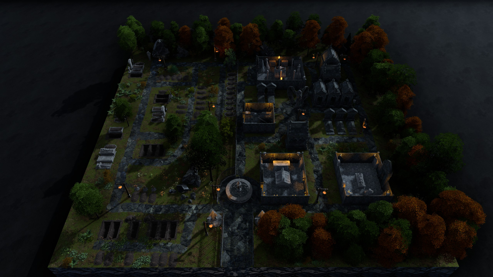

Worldbuilding
Handgjorda kartor skapade i Dungeon Alchemist för att ge spelarna en levande, visuell värld att utforska.
Jag bygger kartor för att förstärka berättelsen, inte bara för att fylla ett rutnät. Varje rum, varje gata och varje skogsstig är designad med atmosfär och narrativ i fokus.
Kartdesign som berättarverktyg
Mina kartor är inte bara taktiska ytor. De är visuella berättelser som sätter stämningen innan ett enda ord har sagts. Jag använder Dungeon Alchemist för att bygga detaljerade 2D- och 3D-miljöer som ger spelarna en konkret bild av världen de befinner sig i.
Varje karta designas med spelupplevelsen i åtanke: siktlinjer som skapar taktiska val, detaljer som berättar om platsens historia, och atmosfär som förstärker det narrativa momentet. Oavsett om det är ett slitet värdshus vid en dimmig vägkorsning eller en gömd grotta under skogen, ska kartan få spelarna att känna att platsen existerar bortom spelbordet.


En förfallen fästning djupt inne i Neverwinter Wood, nu ockuperad av goblins under kung Grols ledning. Byggnaden är delvis raserad med kollapsat tak och krossade murar som skapar taktiska chokepoints och dolda passager. Två vinklar visar kartans fulla layout med siktlinjer, belysning och narrativa detaljer.


Ett respekterat adelshem i Upper City, känt för extravaganta, något excentriska fester. Bottenvåningen rymmer en festsal med randiga markiser, matplats och ett cirkulärt torn med rituella symboler inristat i golvet. Övervåningen avslöjar privata salonger med röda draperier, bokhyllor och tunga mörka möbler. Tjänstefolkets våning visar sovsalar, kök med öppen eld och förråd. Takvyn blottar en inhägnad trädgård med frodig grönska och en stenskådad innergård. Tunga järngrindar med spjutlika spetsar vakar över entrén, och fullmånen hänger tung över de spetsiga taken.

Neverwinters äldsta kyrkogård, en plats där de döda inte alltid vilar i fred. Förfallna mausoleer med gotiska spetsvalv reser sig bland rader av vittrade gravstenar och öppna gravar. Facklor kastar ett flämtande sken över stengångar kantade av höstfärgade träd, och en ensam fontän markerar kyrkogårdens hjärta. Under ytan rör sig något som inte hör till de levande, och natten här känns alltid längre än den borde.

En öppnad glänta i tät skog där skogshuggare har slagit läger vid flodstranden. Staplade timmerstockar kantar vattnet, tält och enkla skjul ger tak över huvudet, och doften av kåda och färskt trä hänger tung i luften. Ljudet av yxor och såg blandas med arbetarnas rop, men tonen har blivit spänd. Hot i skogen har börjat störa arbetet, och ledaren kämpar för att hålla ordning bland ett allt mer oroligt gäng.


Djupt inne i Mere of Dead Men, dolt bland döda träd och giftiga dimmor, har Red Wizards of Thay slagit läger. Förfallna träbaracker omger ett alkemilaboratorium upplyst av gröna eldfacklor, där bord dignar av glödande elixir, döskallar och arkaniska instrument. En cyan-lysande pool med rituella symboler dominerar lägrets mitt, och spindelväv hänger tungt från de mossklädda väggarna. Lysande svampar i neon sprider ett onaturligt sken över träsket runtomkring, och en förfallen väderkvarn reser sig vid vattenlinjen, en rest från tiden innan träsket slukade allt. Inget här är säkert, och allt här har ett pris.


En slingrande stig uppför en skogsklädd kulle, kantad av höstfärgade träd och vildblommor. Högst upp reser sig en ensam runsten, tyst och vittrad. Lugnet är bedrägligt. Ett högt dån ekar plötsligt från kullen, fåglar flyger upp i panik och unga tallar knäcks som stickor när en enorm ogre bryter fram ur skogen och rusar nedför sluttningen med skrämmande hastighet. Den är aggressiv, territoriell och attackerar utan förvarning. Den slåss tills den dör.


En samlingsplats för medlemmar av Emerald Enclave — en löst organiserad fraktion av druider, naturvördande och frihetsinriktade aktörer. Resande, skogsvarelser, naturmän och äventyrare hittar hit för vila och nyheter från vägar och skogar. Atmosfären är fredlig och välkomnande, men skogen runtomkring är vild och farlig. Här blandas varma ölkrus med viskade varningar, och gränsen mellan civilisation och vildmark är tunn som en trädgräns.